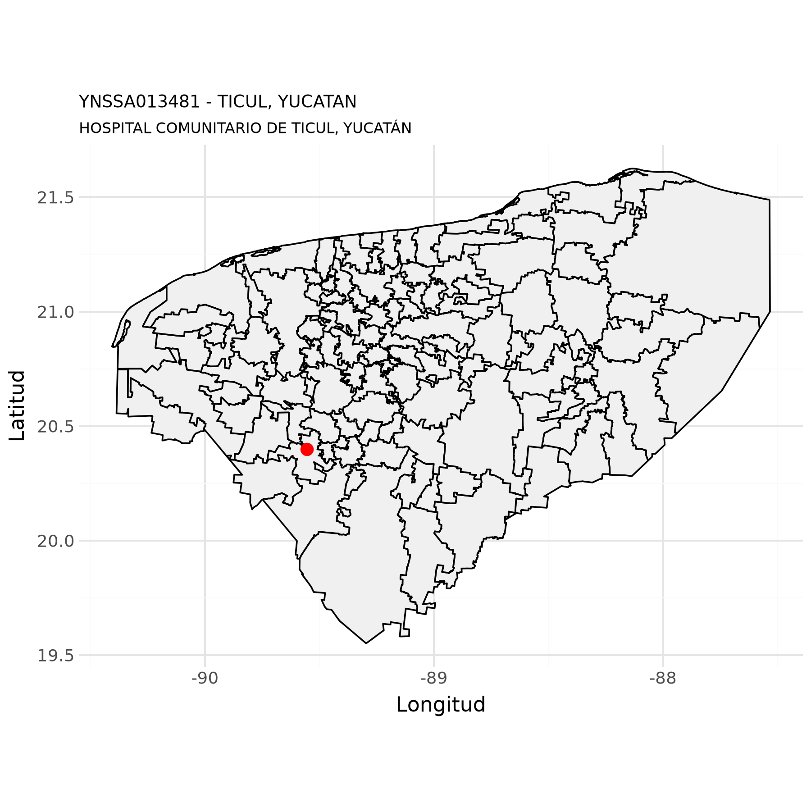
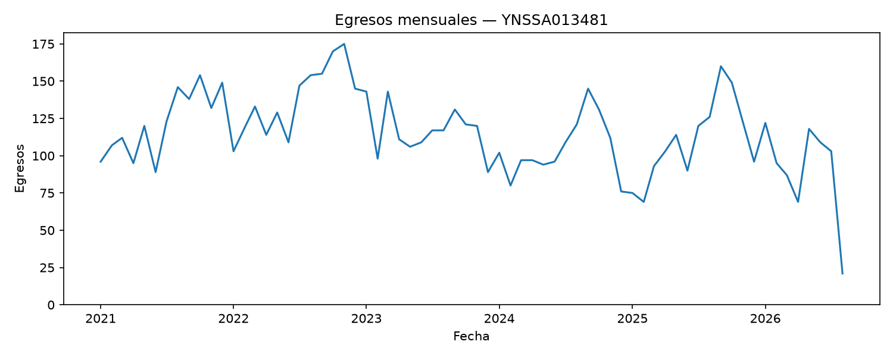
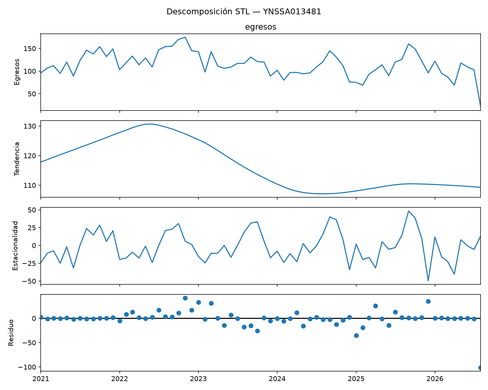
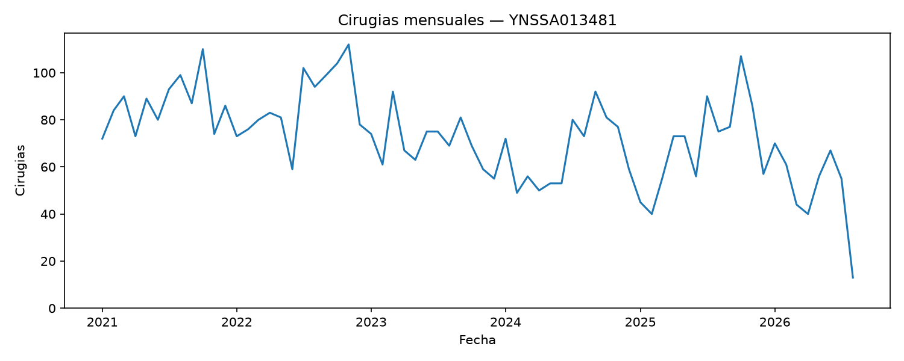
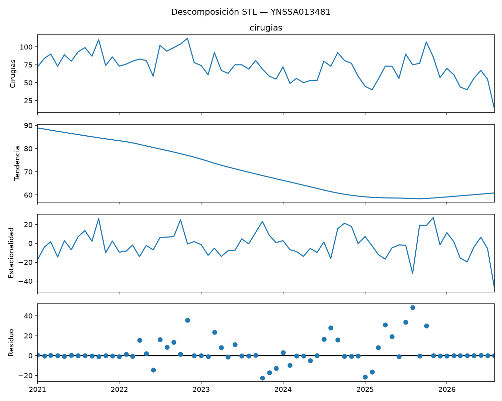

Datos de unidades de salud del IMSS Bienestar
HOSPITAL COMUNITARIO DE TICUL, YUCATÁN - YNSSA013481
5 de octubre de 2026
Luis
M. González

Datos generales
Con base en (Secretaría de Salud - DGIS, 23 de septiembre de 2026)
| Nombre de la unidad: | HOSPITAL COMUNITARIO DE TICUL, YUCATÁN |
| CLUES: | YNSSA013481 |
| Nivel de atención: | SEGUNDO NIVEL |
| Tipología: | HOSPITAL INTEGRAL (COMUNITARIO) |
| Subtipología: | NO ESPECIFICADO |
| Tipo de establecimiento: | HOSPITALIZACIÓN |
| Estrato: | URBANO |
| Estatus: | EN OPERACIÓN |
| Región: | SURESTE |
| Entidad: | YUCATÁN |
| Municipio: | TICUL |
| Localidad: | TICUL |
| Coordenadas: | 20.3983397, -89.5560411 |
| Domicilio: | CALLE 48-A No. SIN NÚMERO Int. TABLAJA CATASTRAL 1482 |
| FRACCIONAMIENTO LAS TINAJAS | |
| TICUL, YUC | |
| CP 97864 | |
| Fecha de construcción: | 2005-02-27 |
| Fecha de inicio de operación: | 2007-02-27 |
| Propiedad del inmueble: | PROPIO |
| Último movimiento: | MODIFICACION |
| Fecha del último movimiento: | 2022-03-18 |
Mapa

Equipamiento médico
Con base en SINERHIAS: (Secretaría de Salud - DGIS, 14 de agosto de 2026)
Equipamiento médico (concentrado)
| Equipo | Funcionando | Fuera de servicio | Total |
|---|---|---|---|
| ANALIZADOR DE LA COAGULACION (COAGULOMETRO) | 1 | 0 | 1 |
| ANALIZADOR DE QUIMICA CLINICA | 1 | 0 | 1 |
| ANALIZADOR PARA QUIMICA SANGUINEA, SEROLOGIA E INMUNOLOGIA | 1 | 0 | 1 |
| ASPIRADOR DE SUCCION REGULABLE (DE PARED) | 7 | 0 | 7 |
| BASCULA CON ESTADIMETRO | 4 | 0 | 4 |
| BASCULA PARA BEBE | 5 | 0 | 5 |
| BOMBA DE INFUSION VOLUMETRICA | 5 | 0 | 5 |
| CARDIOTOCOGRAFO | 6 | 1 | 7 |
| CARRO ROJO CON DESFIBRILADOR MONITOR Y EQUIPO DE REANIMACION | 4 | 0 | 4 |
| CENTRIFUGA CON CABEZAL INTERCAMBIABLE | 1 | 0 | 1 |
| CUNA DE CALOR RADIANTE | 6 | 0 | 6 |
| ELECTROCARDIOGRAFO | 5 | 0 | 5 |
| ESFIGMOMANOMETRO ANEROIDE | 14 | 0 | 14 |
| ESTERILIZADOR DE VAPOR | 2 | 0 | 2 |
| ESTETOSCOPIO FETAL O DE PINARD | 2 | 0 | 2 |
| ESTUCHE DE DIAGNOSTICO COMPLETO (OFTALMOSCOPIO Y OTOSCOPIO) | 3 | 0 | 3 |
| FONODETECTOR DE LATIDOS FETALES | 6 | 0 | 6 |
| INCUBADORA DE TRASLADO | 1 | 0 | 1 |
| INCUBADORA PARA CUIDADOS GENERALES | 3 | 0 | 3 |
| LAMPARA DE FOTOTERAPIA | 2 | 0 | 2 |
| LAMPARA DE HAZ DIRECCIONABLE | 1 | 0 | 1 |
| LAMPARA QUIRURGICA DOBLE | 3 | 0 | 3 |
| LAMPARA QUIRURGICA PORTATIL PARA EMERGENCIA | 1 | 0 | 1 |
| MESA DE CIRUGIA OBSTETRICA | 1 | 0 | 1 |
| MESA DE EXPLORACION GENERAL | 3 | 0 | 3 |
| MESA QUIRURGICA | 2 | 0 | 2 |
| MICROSCOPIO BASICO DE RUTINA | 1 | 0 | 1 |
| MONITOR DE SIGNOS VITALES BASICO (ECG, PANI. SPO2, TEMP) | 3 | 0 | 3 |
| MONITOR DE SIGNOS VITALES INTERMEDIO (ECG, PANI. SPO2, TEMP,PRESION INVASIVA, CO2) | 3 | 0 | 3 |
| MONITOR DE SIGNOS VITALES NEONATAL (ECG, PANI. SPO2, TEMP,PRESION INVASIVA, CO2, EEG) | 1 | 0 | 1 |
| NEGATOSCOPIO | 8 | 0 | 8 |
| REANIMADOR MANUAL PARA RECIEN NACIDO | 2 | 0 | 2 |
| REFRIGERADOR DE FARMACIA | 1 | 0 | 1 |
| REFRIGERADOR PARA LABORATORIO CLINICO | 1 | 0 | 1 |
| REFRIGERADOR PARA VACUNAS | 0 | 2 | 2 |
| TERMOMETRO INFRARROJO | 1 | 0 | 1 |
| ULTRASONIDO DE DIAGNOSTICO | 2 | 0 | 2 |
| UNIDAD DE ANESTESIA BASICA | 3 | 0 | 3 |
| VENTILADOR ADULTO - PEDIATRICO - NEONATAL | 1 | 0 | 1 |
Egresos hospitalarios
Con base en (Secretaría de Salud - DGIS, 05 de octubre de 2026)
Número de egresos
| Año | Egresos |
|---|---|
| 2021 | 1,461 |
| 2022 | 1,653 |
| 2023 | 1,405 |
| 2024 | 1,260 |
| 2025 | 1,317 |
| 2026 | 724 |


Top 20 de afecciones principales
| Posición | Afección principal | Egresos |
|---|---|---|
| 1 | PARTO ÚNICO ESPONTÁNEO, PRESENTACIÓN CEFÁLICA DE VÉRTICE | 508 |
| 2 | PARTO POR CESÁREA DE EMERGENCIA | 153 |
| 3 | PARTO POR CESÁREA, SIN OTRA ESPECIFICACIÓN | 142 |
| 4 | PARTO POR CESÁREA ELECTIVA | 70 |
| 5 | ICTERICIA NEONATAL, NO ESPECIFICADA | 26 |
| 6 | ABORTO ESPONTÁNEO INCOMPLETO, SIN COMPLICACIÓN | 24 |
| 7 | FALSO TRABAJO DE PARTO ANTES DE LAS 37 SEMANAS COMPLETAS DE GESTACIÓN | 23 |
| 8 | ESTERILIZACIÓN | 17 |
| 9 | DIABETES MELLITUS QUE SE ORIGINA CON EL EMBARAZO | 7 |
| 10 | HEMORRAGIA VAGINAL Y UTERINA ANORMAL, NO ESPECIFICADA | 6 |
| 11 | ABORTO ESPONTÁNEO COMPLETO O NO ESPECIFICADO, SIN COMPLICACIÓN | 6 |
| 12 | DIABETES MELLITUS PREEXISTENTE, SIN OTRA ESPECIFICACIÓN, EN EL EMBARAZO | 5 |
| 13 | TRABAJO DE PARTO PREMATURO SIN PARTO | 5 |
| 14 | PREECLAMPSIA LEVE A MODERADA | 4 |
| 15 | ABORTO NO ESPECIFICADO COMPLETO O NO ESPECIFICADO, SIN COMPLICACIÓN | 3 |
| 16 | ABORTO RETENIDO | 3 |
| 17 | ABORTO NO ESPECIFICADO INCOMPLETO, SIN COMPLICACIÓN | 3 |
| 18 | TRABAJO DE PARTO PROLONGADO, NO ESPECIFICADO | 3 |
| 19 | PREECLAMPSIA SEVERA | 3 |
| 20 | ICTERICIA NEONATAL POR OTRAS CAUSAS ESPECIFICADAS | 3 |
| 21 | OTROS | 77 |
Servicios de ingreso
| Posición | Servicio de ingreso | Egresos |
|---|---|---|
| 1 | GINECO OBSTETRICIA | 1,056 |
| 2 | PEDIATRÍA | 32 |
| 3 | GINECOLOGÍA | 1 |
| 4 | NO APLICA | 1 |
| 5 | OBSTETRICIA | 1 |
Servicios de egreso
| Posición | Servicio de egreso | Egresos |
|---|---|---|
| 1 | GINECO OBSTETRICIA | 1,058 |
| 2 | PEDIATRÍA | 31 |
| 3 | GINECOLOGÍA | 1 |
| 4 | NO ESPECIFICADO | 1 |
Procedencia
| Posición | Procedencia | Egresos |
|---|---|---|
| 1 | URGENCIAS | 1,088 |
| 2 | CONSULTA EXTERNA | 3 |
Motivo de egreso
| Posición | Motivo de egreso | Egresos |
|---|---|---|
| 1 | MEJORÍA | 1,071 |
| 2 | TRASLADO A OTRA UNIDAD | 18 |
| 3 | VOLUNTARIO | 2 |
Número de procedimientos quirúrgicos
| Año | Cirugías |
|---|---|
| 2021 | 2,653 |
| 2022 | 4,300 |
| 2023 | 5,311 |
| 2024 | 5,130 |
| 2025 | 5,295 |
| 2026 | 3,053 |


Procedimientos quirúrgicos de egresos
| Posición | Procedimiento quirúrgico | Egresos |
|---|---|---|
| 1 | CESÁREA CLÁSICA BAJA | 372 |
| 2 | OTRA DESTRUCCIÓN U OCLUSIÓN BILATERAL DE LAS TROMPAS DE FALOPIO | 250 |
| 3 | REPARACIÓN DE OTRO DESGARRO OBSTÉTRICO ACTUAL | 249 |
| 4 | EPISIOTOMÍA | 38 |
| 5 | LEGRADO POR ASPIRACIÓN DEL ÚTERO DESPUÉS DE PARTO O ABORTO | 22 |
| 6 | DILATACIÓN Y LEGRADO DESPUÉS DE PARTO O ABORTO | 13 |
| 7 | EXPLORACIÓN MANUAL DE LA CAVIDAD UTERINA, DESPUÉS DEL PARTO | 11 |
| 8 | EVACUACIÓN DE OTRO HEMATOMA DE VULVA O VAGINA | 7 |
| 9 | LAPAROTOMÍA EXPLORADORA | 4 |
| 10 | OTRA HISTERECTOMÍA TOTAL ABDOMINAL Y LA NO ESPECIFICADA | 3 |
| 11 | REPARACIÓN DE DESGARRO OBSTÉTRICO ACTUAL DEL CUELLO UTERINO | 3 |
| 12 | SALPINGECTOMÍA UNILATERAL TOTAL | 2 |
| 13 | EXTIRPACIÓN LOCAL DE LESIÓN DE MAMA | 2 |
| 14 | OTRA DILATACIÓN Y LEGRADO | 2 |
| 15 | OTRA HISTERECTOMÍA SUBTOTAL ABDOMINAL Y LA NO ESPECIFICADA | 2 |
| 16 | OTRA OOFOROTOMÍA UNILATERAL | 2 |
| 17 | OTRA OPERACIÓN SOBRE LA MAMA | 1 |
| 18 | OTRA REPARACIÓN DE INTESTINO | 1 |
| 19 | OTRA REPARACIÓN DE LA VULVA Y EL PERINEO | 1 |
| 20 | OTRA SUTURA DE PARED ABDOMINAL | 1 |
| 21 | OTROS | 3 |
Procedimientos terapeúticos de egresos
| Posición | Procedimiento terapéutico | Egresos |
|---|---|---|
| 1 | MANEJO ACTIVO DE TERCER PERIODO DEL TRABAJO DE PARTO | 874 |
| 2 | APEGO INMEDIATO MADRE Y NEONATO | 820 |
| 3 | OTRO PARTO ASISTIDO MANUALMENTE | 519 |
| 4 | INYECCIÓN DE ESTEROIDE | 53 |
| 5 | INYECCIÓN DE OTRA HORMONA | 41 |
| 6 | OTRA FOTOTERAPIA | 31 |
| 7 | INSERCIÓN DE DISPOSITIVO ANTICONCEPTIVO INTRAUTERINO | 6 |
| 8 | INYECCIÓN DE OTRA SUSTANCIA ANTI-INFECCIOSA | 4 |
| 9 | INYECCIÓN DE INSULINA | 3 |
| 10 | INYECCIÓN DE ANTIBIÓTICO | 2 |
| 11 | TRANSFUSIÓN DE CONCENTRADO DE HEMATÍES | 2 |
| 12 | INDUCCIÓN MÉDICA DE PARTO | 1 |
| 13 | ADMINISTRACIÓN DE MISOPROSTOL PARA TERMINACIÓN DEL ABORTO INCOMPLETO | 1 |
| 14 | TRANSFUSIÓN DE PLAQUETAS | 1 |
| 15 | VENTILACIÓN MECÁNICA NO INVASIVA | 1 |
| 16 | INFUSIÓN O APLICACIÓN DE SURFACTANTE | 1 |
Procedimientos de diagnóstico de egresos
| Posición | Procedimiento de diagnóstico | Egresos |
|---|---|---|
| 1 | CONSULTA NO ESPECIFICADA DE OTRA MANERA | 1,012 |
| 2 | OTRA MONITORIZACIÓN FETAL | 146 |
| 3 | ULTRASONOGRAFÍA DIAGNÓSTICA DEL ÚTERO GRÁVIDO | 101 |
| 4 | OTRAS ULTRASONOGRAFÍAS DIAGNÓSTICAS | 3 |
| 5 | ULTRASONOGRAFIA DIAGNÓSTICA DEL ABDOMEN Y EL RETROPERITONEO | 2 |
Indicadores
El cálculo de los indicadores estratégicos para evaluar el componente de atención en unidades de salud, fueron propuestos por (Servicios de Salud IMSS Bienestar, 2025).
Con las bases de datos compartidas por
DGIS, podemos calcular únicamente los
indicadores del 75 al 81 y el 84
El cálculo de los indicadores fue realizado para el siguiente rango de fechas:
Fecha inicial: 2026-01-01
Fecha final: 2026-09-30
Indicador 75. Razón de personal médico por cama
ATN-07
Fuente de datos:
- Catálogo de CLUES, (Secretaría de Salud - DGIS, 23 de septiembre de 2026)
- SINERHIAS, (Secretaría de Salud - DGIS, 14 de agosto de 2026)
Descripción
Estima el número de camas disponibles por médicos activos.
Proporciona una visión sobre la disponibilidad de médicos en relación al número de camas censables, en unidades hospitalarias del IMSS Bienestar.
Cálculo
\[ Indicador_{75} = \frac{m_{e}}{c_{c}} \]
Donde:
\(m_{e} =\) Total de médicos especialistas registrados en unidades del IMB
\(c_{c}=\) Total de camas censables
Calificaciones
| Calificación | Rango |
|---|---|
| Óptimo | 0.6 - 0.8 |
| Esperado | 0.4 - 0.59 |
| Regular | 0.2 - 0.39 |
| Crítico | < 0.2 |
Resultado
| clues | Médicos especialistas | Camas censables | Indicador 75 | Calificación |
|---|---|---|---|---|
| YNSSA013481 | 0 |
Indicador 77. Promedio de estancia hospitalaria
ATN-09
Fuente de datos:
- Catálogo de CLUES, (Secretaría de Salud - DGIS, 23 de septiembre de 2026)
- Egresos hospitalarios, (Secretaría de Salud - DGIS, 05 de octubre de 2026)
- SINERHIAS, (Secretaría de Salud - DGIS, 14 de agosto de 2026)
Descripción
Exhibe número promedio de días que un paciente permanece internado en el hospital.
Proporciona una visión sobre la duración de las estancias hospitalarias y puede reflejar la eficiencia del cuidado médico y la complejidad de los casos atendidos, en hospitales del IMSS Bienestar.
Cálculo
\[ Indicador_{77} = \frac{d_{e}}{e_{h}} \]
Donde:
\(d_{e} =\) Total de días estancia de egresos hospitalarios durante periodo de análisis
\(e_{h} =\) Total de egresos hospitalarios
Calificaciones
| Calificación | Rango |
|---|---|
| Óptimo | 3.96 - 5.85 |
| Esperado | 5.86 - 6.42 |
| Regular | > 6.42 |
| Crítico | < 3.96 |
Resultado
| clues | Días estancia | Egresos | Indicador 77 | Calificación |
|---|---|---|---|---|
| YNSSA013481 | 2,120 | 724 | 2.93 | Crítico |
Indicador 79. Índice de rotación
ATN-11
Fuente de datos:
- Catálogo de CLUES, (Secretaría de Salud - DGIS, 23 de septiembre de 2026)
- Egresos hospitalarios, (Secretaría de Salud - DGIS, 05 de octubre de 2026)
- SINERHIAS, (Secretaría de Salud - DGIS, 14 de agosto de 2026)
Descripción
Mide la Proporción de pacientes hospitalizados por cama disponible por mes.
Proporciona una visión sobre la utilización de la capacidad hospitalaria, en unidades de salud del IMSS Bienestar.
Cálculo
\[ Indicador_{79} = \frac{e_{h}}{c_{c} \cdot \Delta t} \]
Donde:
\(e_{h}=\) Total de egresos hospitalarios
\(c_{c} =\) Total de camas censables
\(\Delta t =\) Número de días del periodo de análisis
Calificaciones
| Calificación | Rango |
|---|---|
| Óptimo | 3.91 - 5.1 |
| Esperado | 3.0 - 3.90 o 5.11 - 6.0 |
| Regular | 2.0 - 2.9 |
| Crítico | < 2.0 |
Resultado
| clues | Egresos | Camas censables | Indicador 79 | Calificación |
|---|---|---|---|---|
| YNSSA013481 | 724 | 0 |
Indicador 80. Proporción de egresos por mejoría
ATN-12
Fuente de datos:
- Catálogo de CLUES, (Secretaría de Salud - DGIS, 23 de septiembre de 2026)
- Egresos hospitalarios, (Secretaría de Salud - DGIS, 05 de octubre de 2026)
Descripción
Estima Porcentaje de egresos hospitalarios por motivo de curación o mejoría en unidades médicas del IMSS Bienestar dentro un periodo determinado.
Se relaciona con la eficacia en los tratamientos y la calidad de la atención.
Cálculo
\[ Indicador_{80} = \frac{e_{h_{m}}}{e_{h}} \times 100 \]
Donde:
\(e_{h}=\) Total de egresos hospitalarios
\(e_{h_{m}} =\) Número de egresos hospitalarios por motivo de curación o mejoría
Calificaciones
| Calificación | Rango |
|---|---|
| Óptimo | 95 - 100 |
| Esperado | 90 - 94.9 |
| Regular | 80 - 89.9 |
| Crítico | < 80 |
Resultado
| clues | Curación o mejoría | Egresos | Indicador 80 | Calificación |
|---|---|---|---|---|
| YNSSA013481 | 711 | 724 | 98.20 | Óptimo |
Indicador 81. Promedio diarios de eventos quirúrgicos por quirófano
ATN-13
Fuente de datos:
- Catálogo de CLUES, (Secretaría de Salud - DGIS, 23 de septiembre de 2026)
- Egresos hospitalarios, (Secretaría de Salud - DGIS, 05 de octubre de 2026)
- SINERHIAS, (Secretaría de Salud - DGIS, 14 de agosto de 2026)
Descripción
Expresa el número promedio de cirugías realizadas por quirófanos habilitados durante un mes en hospitales del IMSS Bienestar.
Mide el grado de utilización de quirófanos en cirugías.
Cálculo
\[ Indicador_{81} = \frac{i_{q}}{s_{o} \cdot \Delta t} \]
Donde:
\(i_{q} =\) Número de cirugías realizadas por mes calendario
\(s_{o} =\) Número de quirófanos habilitados en unidades del IMB
\(\Delta t =\) Número de días del periodo de análisis
Calificaciones
| Calificación | Rango |
|---|---|
| Óptimo | 2.0 - 3.5 |
| Esperado | 1.0 - 1.9 o 3.6 - 4.0 |
| Regular | 0.5 - 0.9 o > 4.0 |
| Crítico | < 0.5 |
Resultado
| clues | Cirugías | Quirófanos | Indicador 81 | Calificación |
|---|---|---|---|---|
| YNSSA013481 | 406 |
Indicador 84. Mortalidad Hospitalaria
ATN-16
Fuente de datos:
- Catálogo de CLUES, (Secretaría de Salud - DGIS, 23 de septiembre de 2026)
- Egresos hospitalarios, (Secretaría de Salud - DGIS, 05 de octubre de 2026)
Descripción
Muestra la relación entre el número de egresos por defunción y el total de egresos hospitalarios, excluyendo los egresos relacionados con la atención obstétrica
Cálculo
\[ Indicador_{84} = \frac{e_{h_{d}}}{e_{h}} \cdot 1000 \]
Donde:
\(e_{h_{d}} =\) Número de egresos por defunción ocurridos de manera intrahospitalaria
\(e_{h}=\) Total de egresos hospitalarios
En ambas variables, se excluyen los egresos relacionados con la atención obstétrica
Calificaciones
| Calificación | Rango |
|---|---|
| Óptimo | \(\leq\) 16.9 |
| Esperado | 17.0 - 23.9 |
| Regular | 24.0 - 30.9 |
| Crítico | \(\geq\) 31.0 |
Resultado
| clues | Defunciones | Egresos | Indicador 84 | Calificación |
|---|---|---|---|---|
| YNSSA013481 | 0 | 61 | 0.0 | Óptimo |
Apéndice
Descargas
Descargar YNSSA013481.pdf